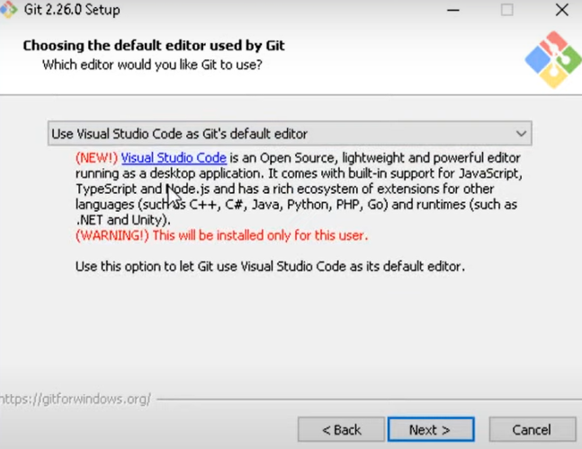
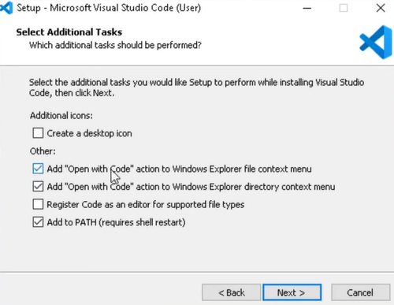
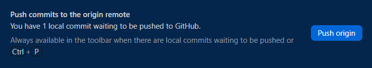
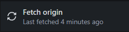
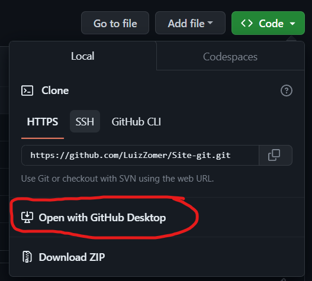
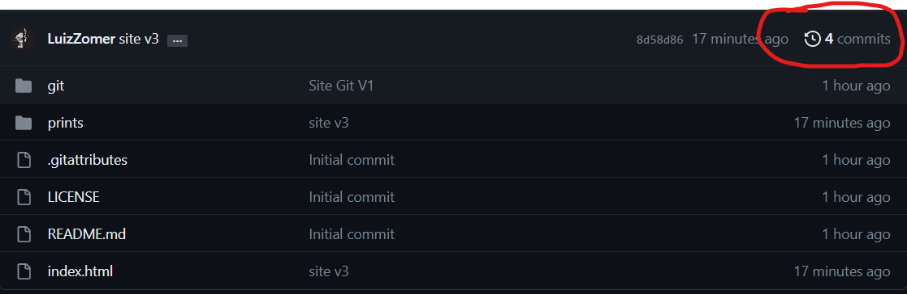
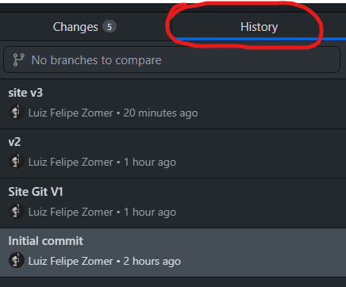
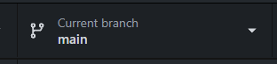
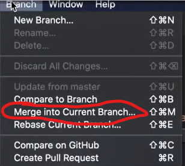

Software de versionamento
O software de versionamento, também conhecido como sistema de controle de versão, é um tipo de software que permite o gerenciamento de mudanças em arquivos de código-fonte e outros tipos de arquivos. O software de versionamento permite que os desenvolvedores trabalhem em diferentes versões do mesmo arquivo simultaneamente, sem sobrescrever o trabalho de outras pessoas. Ele também mantém um registro das alterações feitas em cada arquivo ao longo do tempo, permitindo que os desenvolvedores revertam para versões anteriores se necessário.
Fazendo assim o programador ter total noção do que foi mudado e quando foi mudado, podendo também fazer alterações sem mexer no codigo base do projeto e caso aconteça algum problema no meio do caminho é possivel voltar na versão anterior salva.
Git
Um dos mais populares software de versionamento é o GIT e é esse programa que iremos apresentar aqui.

Para baixar o Git é recomendado que seja direto do site oficial
Site do GitNão esqueça de trocar essa opção abaixo, pois ela é muito importante, ela não estará com o visual code como padrão, é importante coloca-lo e cuidado, há dois vscode como opções, o da foto é o correto e não a versão insiders
Após a instalação é recomendado que reinicie o computador(não é obrigatorio)
GitHub
Se você pensou que é a mesma coisa está errado, GitHub é como se fosse uma rede sociais dos desenvolvedores aonde você deixa seus projetos na nuvem, tornando-os assim intocaveis.

Você irá precisar criar uma conta no site para conseguir ultiliza-lo de maneira correta
GitHub Desktop
Para ultilizar o Git normalmente é usado o terminal para digitar os comandos, mas inicialmente o GitHub Desktop é uma otima opção porque tem as mesmas funcionalidades e é muito intuitivo.
Sua instalação é muito simples.
Site do GitHub DesktopApós baixar é só logar com sua conta do GitHub
Visual Studio code
A ultima coisa que iremos baixar é o VS Code(Visual Studio Code), que é um otimo programa para criar seus codigos e altamente compativel com o Git(Recomendo a versão padrão, não a insiders)
Site do VS code
Não esqueça de habilitar os 'PATH' do VSCode pois facilita no dia-a-dia
Essas opções deixam você apertar com botão direito em algum arquivo e abrir com VSCode
Funcionalidades do GitHub Desktop
Criando um novo repositorio
Para criar um repositorio pelo desktop,é apenas ir em 'File' e depois 'New Repository'


Na tela posterior, você preencherá o nome do projeto, a descrisão, o local que o arquivo irá ser salvo, se ele irá ser iniciado por um 'README'(Essa opção é recomendada ser marcado, pois no GitHub ela será a descrisão do projeto), o git ignore é para especificar algum arquivo para o git ignorar e a license é a licensa de uso(Recomendavel ultilizar a MIT license, mas você pode ler os termo para decidir qual você irá ultilizar)
Confirmando o processo o repositorio foi criado, depois é só apertar em 'push origin' para mandar ao GitHub
Entrando no seu perfil no GitHub e indo no meus repositorios você poderá ve-los.
Pull e Clonagem
O pull é quando você quer puxar um arquivo(do seu repositorio) da nuvem(GitHub) para seu computador
Apertando esse botão com o seu repositorio já selecionado ele puxa as atualizações feita no GitHub(Otimo para trabalho com mais pessoas)
A clonagem de repositorios você copia os arquivos tanto seus quanto de outras pessoas para um repositório local.
É apenas ir no repositório selecionado e apertar no botão verde 'Code' e Depois 'Open with GitHub Desktop'
Depois apenas confirmar o local do arquivo e pronto,apenas ir aonde você o salvou.
Olhando versões antigas do seu projeto
No Desktop é apenas ir em 'History' com o seu repositorio selecionado e no GitHub é apenas ir em 'Commits'

Branch e Merge
Quando você cria uma nova branch(Ramificação), você pode fazer alterações nessa branch sem afetar o código em outras branches. Isso permite que você experimente novas ideias sem se preocupar em quebrar o código existente. Quando você está pronto para integrar suas alterações à branch principal, você pode fazer um merge(Mesclagem), que combina as alterações de sua branch na branch principal.
Para fazer uma branch é simples, apenas aperte 'Current branch' no desktop e crie um nome para ela.
Mas para fazer o merge você terá que ir em branch na parte superior da janela e apertar em 'Merge into curent branch' com a main selecionada
Issues
As issues são algum aviso de problema que você pode fazer ou receber no GitHub
Markdown
A linguagem ultilizada para comentarios e edições no proprio GitHub é o Markdown, uma linguagem simples e de facil leitura
Uma lista de comandos em markdown